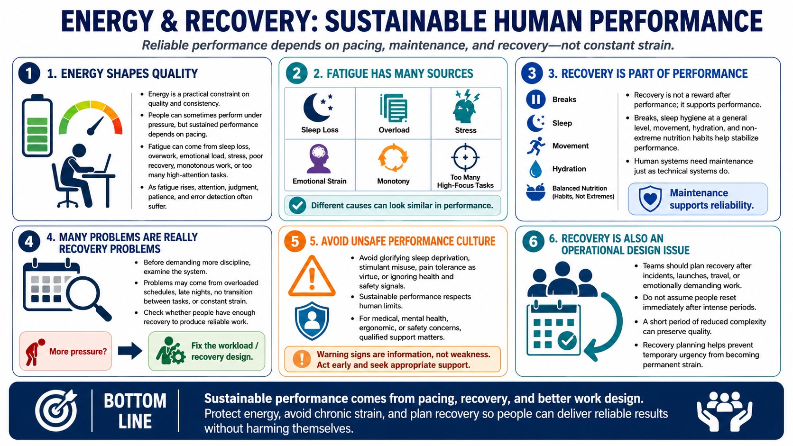

Energy, Fatigue, and Recovery
Connecting to LMS... Progress: in progress

Narration
Energy is a practical constraint on quality and consistency. People can sometimes produce good work under pressure, but sustained performance depends on pacing. Fatigue can come from sleep loss, overwork, emotional load, stress, poor recovery, monotonous work, or too many high-attention tasks without relief. When fatigue rises, attention, judgment, patience, and error detection often suffer.
Recovery is part of performance, not a reward after performance. Breaks, sleep hygiene at a general level, movement, hydration, and non-extreme nutrition habits all support a more stable baseline. This is not about turning work into a wellness contest or prescribing medical routines. It is about recognizing that human systems need maintenance just as technical systems do.
Many performance problems are really recovery problems. A person may believe they need more discipline when the real issue is an overloaded schedule, too many late nights, no transition between tasks, or constant emotional strain. Before adding more pressure, examine whether the system gives people enough recovery to produce reliable work.
Unsafe or extreme performance practices should be avoided. Guidance that encourages sleep deprivation, stimulant misuse, pain tolerance as a virtue, or ignoring health and safety signals creates risk. For medical, mental health, ergonomic, or safety concerns, qualified support matters. Sustainable performance respects limits and builds routines that can be repeated without harming the person.
Recovery also has an operational dimension. Teams that schedule intense periods should plan the return to normal workload, not assume people will immediately reset. After incidents, launches, travel, or emotionally demanding work, a short period of reduced complexity can preserve quality. Recovery planning is how organizations avoid converting temporary urgency into permanent strain.